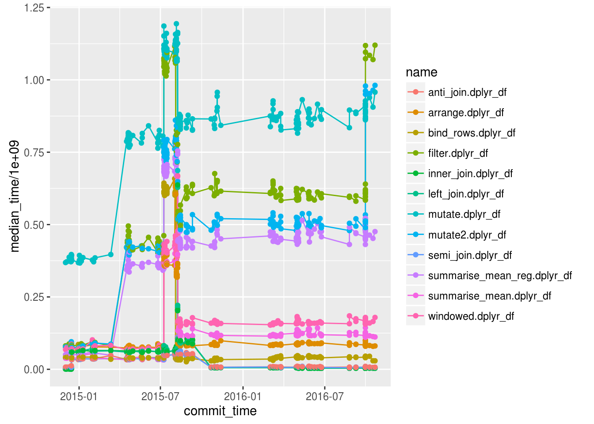
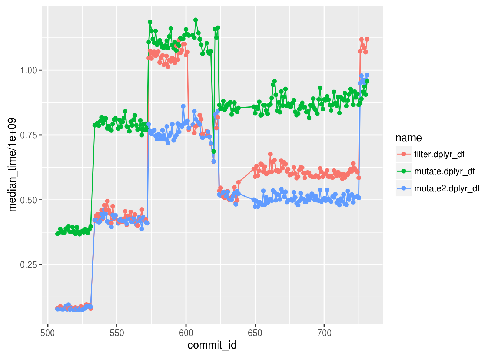

r <- rprojroot::is_r_package$make_fix_file()
library(dplyr.benchmark)
library(dplyr)##
## Attaching package: 'dplyr'## The following objects are masked from 'package:stats':
##
## filter, lag## The following objects are masked from 'package:base':
##
## intersect, setdiff, setequal, unionlibrary(ggplot2)log_df <- get_log_df()csv_files <- dir(r("inst/benchmark"), full.names = TRUE, pattern = glob2rx("*.csv"))
names(csv_files) <- gsub("^.*[^0-9a-f]([0-9a-f]+)[.]csv$", "\\1",
as.character(csv_files))
csv_data <- lapply(csv_files, read.csv, row.names = NULL, stringsAsFactors = FALSE)
full_data <- bind_rows(csv_data, .id = "sha")plot_data <- log_df %>%
inner_join(full_data, by = "sha") %>%
filter(grepl("dplyr_df", name))plot_data %>%
ggplot(aes(x = commit_time, y = median_time / 1e9, color = name, group = name)) +
geom_line() +
geom_point()
plot_data %>%
filter(grepl("filter|mutate", name)) %>%
ggplot(aes(x = commit_id, y = median_time / 1e9, color = name, group=name)) +
geom_line() +
geom_point()